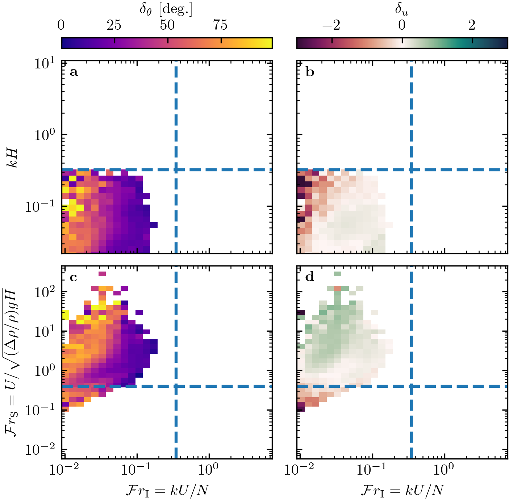

Note
Click here to download the full example code
Figure 12 – SI¶
import numpy as np
import matplotlib.pyplot as plt
import matplotlib.colors as mpcolors
import sys
import os
sys.path.append('../../')
import python_codes.theme as theme
from python_codes.general import smallestSignedAngleBetween, find_mode_distribution
from python_codes.plot_functions import plot_regime_diagram
# Loading figure theme
theme.load_style()
# path
path_imgs = '../../static/images/'
path_savefig = '../../Paper/Figures'
path_outputdata = '../../static/output_data/data/'
# ##### Loading meteo data
Data = np.load(os.path.join(path_outputdata, 'Data_final.npy'), allow_pickle=True).item()
Stations = ['South_Namib_Station', 'Deep_Sea_Station']
# #### Computing quantities
Orientation_era = np.concatenate([Data[station]['Orientation_era'] for station in Stations])
Orientation_station = np.concatenate([Data[station]['Orientation_station'] for station in Stations])
U_era = np.concatenate([Data[station]['U_star_era'] for station in Stations])
U_station = np.concatenate([Data[station]['U_star_station'] for station in Stations])
numbers = {key: np.concatenate([Data[station][key] for station in Stations]) for key in ('Froude', 'kH', 'kLB')}
#
Delta = smallestSignedAngleBetween(Orientation_era, Orientation_station)
mode_delta = np.array([find_mode_distribution(Delta, i) for i in np.arange(150, 350)]).mean()
delta_angle = np.abs(Delta)
delta_u = (U_era - U_station)/U_era
# #### Figure parameters
lims = {'Froude': (5.8e-3, 450), 'kLB': (0.009, 7.5), 'kH': (2.2e-2, 10.8)}
cmaps = [theme.cmap_delta_theta, theme.cmap_delta_u]
norms = [mpcolors.Normalize(vmin=0, vmax=99),
mpcolors.TwoSlopeNorm(vmin=-3, vcenter=0, vmax=3)]
cbar_labels = [r'$\delta_{\theta}$ [deg.]', r'$\delta_{u}$']
quantities = [delta_angle, delta_u]
labels = [r'\textbf{a}', r'\textbf{b}', r'\textbf{c}', r'\textbf{d}']
mask = ~np.isnan(numbers['Froude'])
log_counts_max = np.log10(2230)
regime_line_color = 'tab:blue'
vars = [('kLB', 'kH'), ('kLB', 'Froude')]
ax_labels = {'kH': r'$kH$', 'Froude': r'$\mathcal{F} = U/\sqrt{(\Delta\rho/\rho_{0}) g H}$',
'kLB': r'$\mathcal{F}_{\textup{I}} = kU/N$'}
xlabels = [r'$\mathcal{F}_{\textup{I}} = kU/N$']
ylabels = [r'$kH$', r'$\mathcal{F} = U/\sqrt{(\Delta\rho/\rho) g H}$']
lim_regime = {'kH': 0.32, 'Froude': 0.4, 'kLB': 0.35}
# 3D plot
view_point = (25, -128)
plot_idx = np.random.permutation(np.arange(delta_angle.size)) # to plot the points of the scatter plot in random order
# #### Figure
fig, axarr = plt.subplots(2, 2, figsize=(theme.fig_width, 0.6*theme.fig_height_max),
constrained_layout=True, gridspec_kw={'height_ratios': [1, 1]})
# #### colorbars
for i, (cmap, norm) in enumerate(zip(cmaps, norms)):
sm = plt.cm.ScalarMappable(cmap=cmap, norm=norm)
cb = plt.colorbar(sm, ax=axarr[0, i], location='top')
cb.set_label(cbar_labels[i])
for i, (var1, var2) in enumerate(vars):
for j, (ax, quantity, cmap, norm) in enumerate(zip(axarr[i, :].flatten(), quantities, cmaps, norms)):
vars = [numbers[var1][mask], numbers[var2][mask]]
lims_list = [lims[var1], lims[var2]]
#
bin1 = np.logspace(np.floor(np.log10(numbers[var1][mask].min())), np.ceil(np.log10(numbers[var1][mask].max())), 50)
bin2 = np.logspace(np.floor(np.log10(numbers[var2][mask].min())), np.ceil(np.log10(numbers[var2][mask].max())), 50)
bins = [bin1, bin2]
xlabel = None if i < 1 else ax_labels[var1]
ylabel = None if j > 0 else ax_labels[var2]
#
a = plot_regime_diagram(ax, quantity[mask], vars, lims_list, xlabel, ylabel, bins=bins, norm=norm, cmap=cmap, type='binned')
#
ax.text(0.04, 0.94, labels[2*i + j], transform=ax.transAxes, ha='left', va='center')
#
# regime lines
ax.axvline(lim_regime[var1], color=regime_line_color, linestyle='--', lw=2)
ax.axhline(lim_regime[var2], color=regime_line_color, linestyle='--', lw=2)
plt.savefig(os.path.join(path_savefig, 'Figure12_supp.pdf'), dpi=400)
plt.show()
Total running time of the script: ( 0 minutes 4.151 seconds)